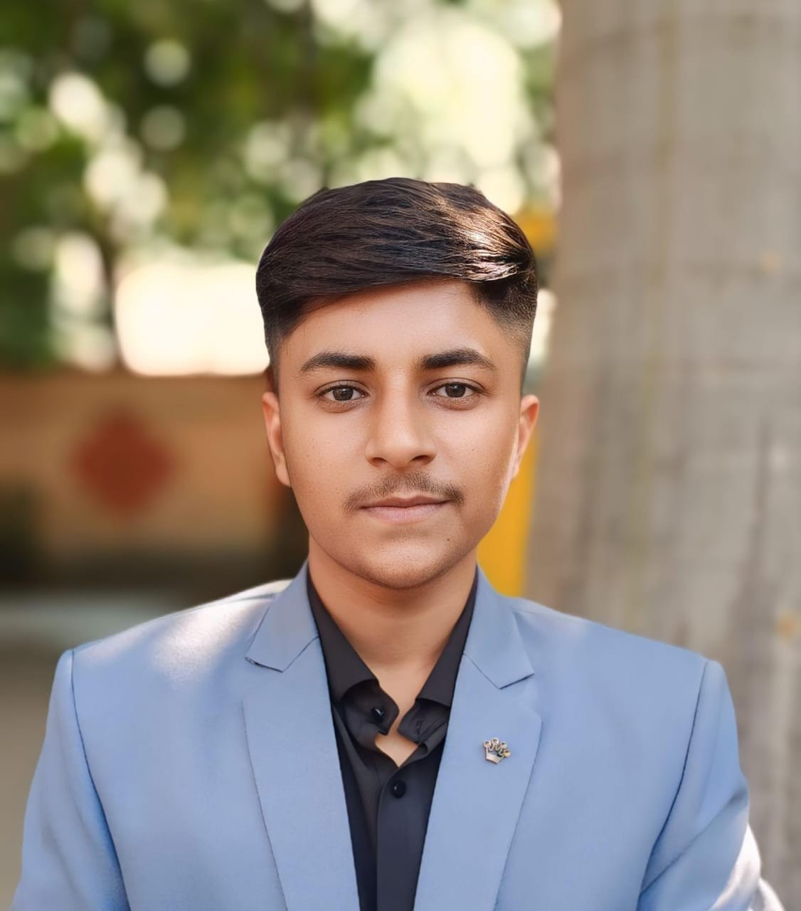

SUMIT YADUWANSHI

Sagar Institute of Science and Technology, Gandhinagar, Bhopal
+91 9770336716 mrsumityaduwanshi7869@gmail.com www.linkedin.com/in/sumityaduwanshi7869
SKILLS
- PCB Designing (KiCad)
- Python, C, C++, Arduino Programming
- Web Development (HTML, CSS, & JS)
- Gen AI
EDUCATION
Sagar Institute of Science & Technology Gandhinagar, Bhopal
B.Tech in Electronics and Communication Engineering
2023 - Present
Govt CM Rise School Seoni Malwa M.P.
MP Board 12th PCM
2022 - 2023
Govt EX. H.S. School Seoni Malwa M.P.
MP Board 10th
2020 - 2021
PROJECT
Developed an AI-Powered Companion Cobot (Dec 2024)
Role: Hardware Design & Embedded System
Developed an AI-Powered humanoid cobot with integrated voice/display,
QR/NFC scanning, laser pointing, and multilingual support to enhance
automated customer interaction.
Custom ESP32-Based Multi-Sensor Development & Testing PCB Designed in KiCad (Dec 2025)
Designed a custom ESP32-based multi-sensor development PCB using KiCad,
intended for sensor testing and real-world IoT embedded project development.
The board integrates multiple sensors, user interfaces, display support,
and onboard power regulation.
ACHIEVEMENTS
Vice President, IETE Students Forum (ISF): Led departmental technical initiatives and student activities.
Member, IoT Center of Excellence (CoE) Student Club: role play embedded systems activities and technical initiatives within the club.
CERTIFICATIONS
"Quantum Computing" organized by the Centre for Development of Advanced Computing (CDAC),
Hyderabad and Indian Institute of Technology (IIT) Roorkee,
Introduction to programming in C by IIT Roorkee NPTEL Certificate
INTERESTS
PCB Design & Hardware Development
Embedded System Design and IoT Application Development
Leadership